Objetivos
- Crear tablas en el documento HTML.
- Conocer las etiquetas para trabajar con tablas.
- Conocer las etiquetas para crear formularios.
Introducción y contextualización práctica
En temas anteriores hemos trabajado con numerosas etiquetas que nos han permitido enriquecer el contenido de nuestra página web. En este tema veremos las tablas y los formularios.
Con las tablas podremos tabular información para que se muestre de una manera estructurada, gracias a las filas y a las columnas que las caracterizan y que, visualmente, nos van a proporcionar un contenido más organizado.
Por otro lado, los formularios nos permitirán interactuar con el usuario, porque nos permitirán solicitar información que el usuario deberá introducir.
La agencia de viajes solicita a WebMalagaDesign que cree un formulario para que los clientes puedan enviarles consultas.
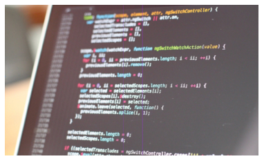
Tablas
Al igual que podemos trabajar con tablas en un procesador de textos para estructurar el contenido en filas y columnas, en HTML también tenemos la posibilidad de crear este elemento. La etiqueta que usaremos es <table>.
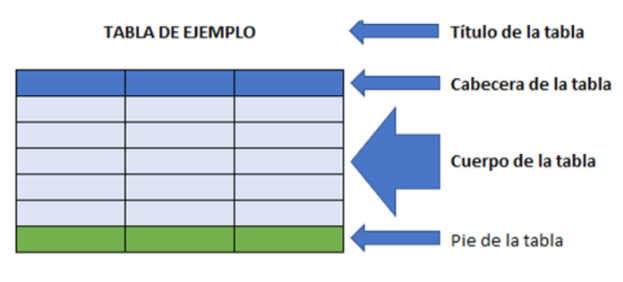
Podemos diferenciar las siguientes partes en una tabla:
- Título (
<caption>): identifica el título de la tabla. - Cabecera (
<thead>): identifica las celdas que van a formar parte de la cabecera de la tabla. - Cuerpo (
<tbody>): contiene las celdas con el contenido de la tabla. - Pie (
<tfoot>): contiene las celdas que forman el pie de la tabla.
Tanto la cabecera como el cuerpo y el pie de tabla contendrán una o más filas (<tr>), cada una de las cuales estará compuesta por celdas de datos (<td>) o celdas de cabecera (<th>).
Por lo tanto, una tabla típica puede ser la siguiente:
<table>
<caption>Precio de las naranjas</caption>
<thead>
<tr>
<th>Provincia</th>
<th>Precio</th>
</tr>
</thead>
<tbody>
<tr><td>Málaga</td><td>0,54 €</td></tr>
<tr><td>Granada</td><td>0,45 €</td></tr>
</tbody>
<tfoot>
<tr><th>Promedio</th><th>0,5 €</th></tr>
</tfoot>
</table>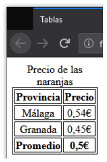
Por defecto, los navegadores, cuando detectan cabeceras en una tabla, suelen aplicarles un estilo diferente. En este caso, se muestran en negrita. En el siguiente apartado mostramos cómo se ha realizado esta tabla, que tiene una estructura típica. Se ha aplicado cierto estilo con la etiqueta <style>. No te preocupes porque este código se explicará más adelante, cuando veamos CSS.
2.1. Estructura típica de tabla
Los elementos thead, tbody y tfoot nos sirven para agrupar una o varias filas. Si no necesitamos esta agrupación no es necesario incluirlos, y solo deberíamos indicar filas (<tr>), celdas de datos (<td>) y celdas de cabecera (<th>).
Normalmente, las celdas de cabecera (<th>) se muestran en la cabecera (<thead>), pero pueden utilizarse en otros lugares de la tabla, como en este caso, en el que las hemos utilizado en el pie (<tfoot>).
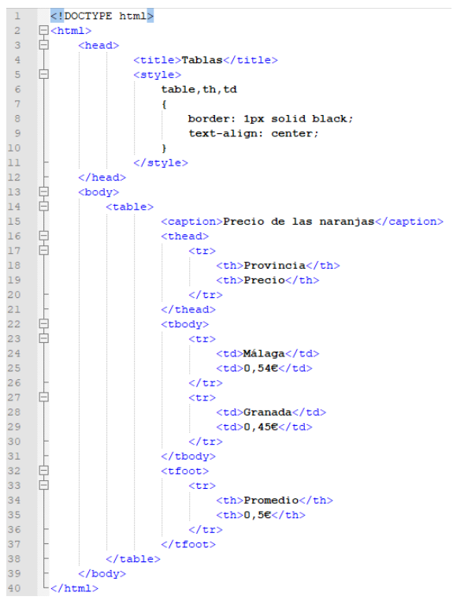
2.1.1. Etiquetas <col> y <colgroup>
Estas etiquetas nos van a permitir agrupar columnas para identificar algunas que tengan un significado especial. Esto nos va a dejar colorear esas columnas para que destaquen del resto cuando le podamos aplicar estilos. En el ejemplo se sombrean las dos primeras columnas en rojo y la tercera en amarillo.
<table>
<colgroup>
<col span="2" class="grupo-rojo">
<col class="grupo-amarillo">
</colgroup>
<thead>
<tr><th>ISBN</th><th>Title</th><th>Price</th></tr>
</thead>
<tbody>
<tr><td>3476896</td><td>My first HTML</td><td>$53</td></tr>
<tr><td>5869207</td><td>My first CSS</td><td>$49</td></tr>
</tbody>
</table>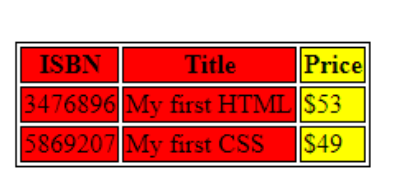
2.2. Atributos colspan y rowspan
Estos atributos nos van a permitir unir celdas tanto horizontal como verticalmente. Cuando queramos unir celdas de manera horizontal usaremos colspan, y cuando la agrupación la necesitemos en vertical, usaremos rowspan.
El número que asociemos a esos atributos indicará el número de celdas que queramos unir. Estos atributos están asociados con las etiquetas <td> y <th>.
Siguiendo con el ejemplo anterior, si quisiéramos tener una primera fila combinada y una primera columna unida con información común, tendríamos que codificar el siguiente documento HTML:
<table>
<tr>
<th colspan="3">Precio de las naranjas</th>
</tr>
<tr>
<th rowspan="4">Datos analizados</th>
<th>Provincia</th>
<th>Precio</th>
</tr>
<tr><td>Málaga</td><td>0,54 €</td></tr>
<tr><td>Granada</td><td>0,45 €</td></tr>
<tr><th>Promedio</th><th>0,5 €</th></tr>
</table>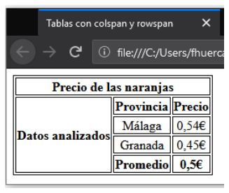
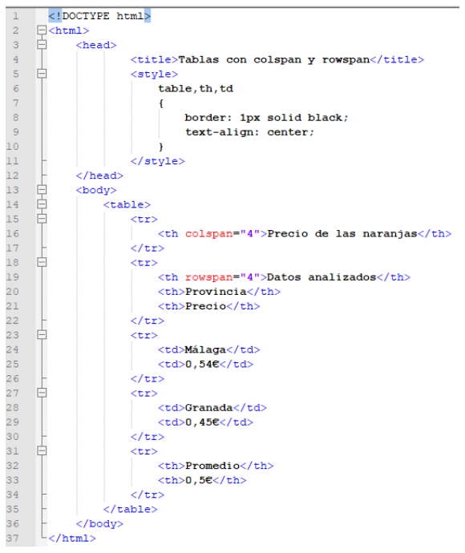
Formularios
Los formularios nos van a permitir agrupar una serie de controles para recoger información de los usuarios y enviarla a un servidor web para que este procese los datos. Un ejemplo típico sería un formulario de contacto de una página web.
La etiqueta que engloba los controles es <form>. Se trata de un elemento de bloque y puede contener otros elementos HTML además de los propios de los formularios. Los atributos asociados más importantes son:
action: aquí se indica la página web que va a recibir los datos que hemos introducido en el formulario. Normalmente se trata de una página web dinámica que contendrá un script con un lenguaje de programación del lado del servidor, como PHP (Hypertext Preprocessor).method: se indica de qué manera se va a enviar la información. Puede ser de dos tipos:get: la información aparece en la propia llamada de la página web; por lo tanto, los datos se pueden ver en la URL. Estos datos no deben ser sensibles porque serán públicos. Es el método por defecto si no se indica ninguno.post: la información se envía en el cuerpo de la petición y no aparece en la barra de direcciones.
El método post no cifra ni protege los datos por sí solo: simplemente evita que aparezcan en la URL. Para proteger información sensible se necesita una conexión segura y medidas adicionales.
<form action="http://localhost/proceso.php" method="get">
Nombre: <input type="text" name="nombre">
<p>
<input type="radio" name="sexo" value="h">Hombre
<input type="radio" name="sexo" value="m">Mujer
</p>
<input type="submit" value="Enviar">
</form>Lo importante ahora es conocer el comportamiento de los atributos action y method de form, que provocan que, al pulsar el botón «Enviar», se envíen los datos introducidos al fichero proceso.php.
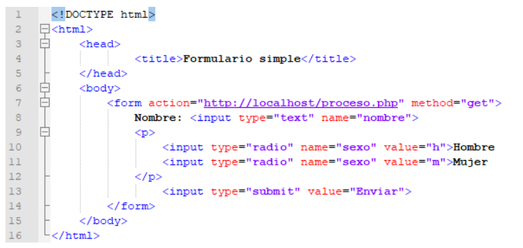
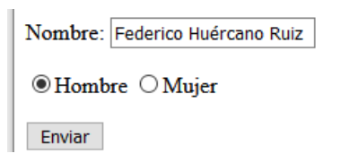
3.1. Método get y post
Como observamos en el ejemplo anterior, el fichero que se encuentra en el servidor y que procesará la información enviada desde el cliente es proceso.php. Si utilizo el método de envío get, al hacer clic sobre el botón «Enviar», observaremos en la dirección URL la siguiente llamada:
localhost/proceso.php?nombre=Federico&sexo=h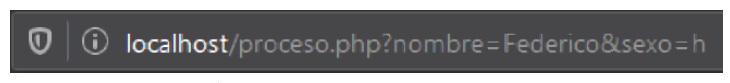
Como se puede observar, aparece el nombre del fichero del servidor y la información que se ha completado en el formulario. La separación entre el fichero de procesamiento y los campos se hace con el carácter ?. Cuando se envía más de un dato en el formulario, se separan con el carácter &. En el caso de que el método utilizado sea post, la llamada sería así:
localhost/proceso.php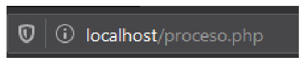
En este caso, la información no aparece en la barra del navegador. Por lo tanto, se usa post cuando no queremos que los datos enviados sean visibles en la URL.
3.2. Atributos comunes
Las etiquetas que pueden utilizarse dentro del formulario dispondrán de atributos comunes, aparte de los específicos de cada etiqueta. Se listan a continuación:
| Atributo | Función |
|---|---|
type | Indica el tipo de control. |
name | Identifica al control. |
value | Permite dar un valor inicial al control. |
required | Indica que el campo es obligatorio. Hasta que no se complete no se podrá enviar el formulario. |
size | Indica el tamaño del control a la hora de su visualización en el navegador. |
maxlength y minlength | Indican la longitud máxima y mínima en caracteres que se puede escribir en un control. |
autofocus | Indica qué control tendrá el foco cuando se visualice el formulario. |
disabled | Permite deshabilitar el control. Aparecerá en un tono gris y no permitirá acceder a él ni podrá coger el foco. |
readonly | El control no puede ser modificado, aunque sí puede coger el foco. |
tabindex | Permite indicar el orden de los controles cuando usamos el tabulador. |
3.3. Controles
En este apartado detallaremos los controles que se pueden usar en un formulario e indicaremos sus atributos principales.
3.3.1. Botones
Este tipo de controles nos va a permitir interactuar con el formulario, permitiendo la ejecución de un script, el envío de los datos o el borrado de estos.
| Control | Etiqueta | Función | Atributo |
|---|---|---|---|
| Botón | <input> | Permite crear un botón al que podremos asociar una funcionalidad, normalmente con JavaScript. | type="button" |
| Botón de envío | <input> | Permite enviar los datos del formulario al fichero de procesamiento en el servidor. | type="submit" |
| Botón de borrado | <input> | Borra la información incluida en el formulario y muestra los valores iniciales; si los controles no tienen esos valores, los pone en blanco. | type="reset" |
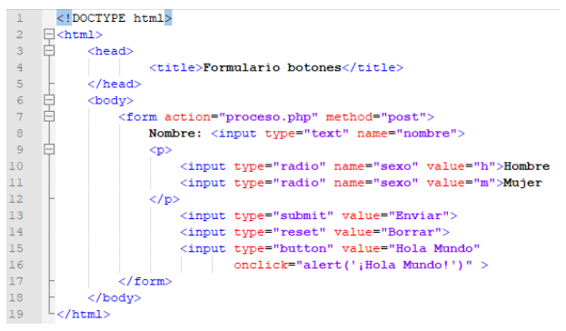
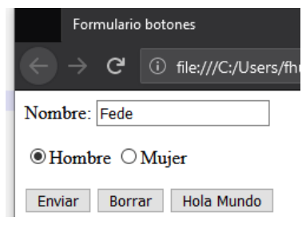
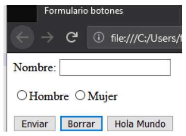
En los ejemplos de las figuras 13 y 14, al pulsar «Enviar» se enviarían al servidor los datos introducidos. Al pulsar «Borrar» se dejarían en blanco. En el caso del botón «Hola Mundo», se ha introducido código en JavaScript.
3.3.2. Cajas de texto
Este tipo de control nos va a permitir introducir texto que solo ocupe una línea o varias, según la etiqueta que usemos.
| Control | Etiqueta | Función y atributos |
|---|---|---|
| Caja de texto alfanumérica | <input> | Permite introducir texto alfanumérico. type="text". |
| Contraseña | <input> | Es una caja de texto especial: al escribir aparecen caracteres que ocultan lo que se está introduciendo. type="password". |
| Área de texto | <textarea> | Permite introducir más de una línea de texto. Los atributos rows y cols indican las filas y columnas iniciales; el área se puede ampliar arrastrando la esquina inferior derecha. |
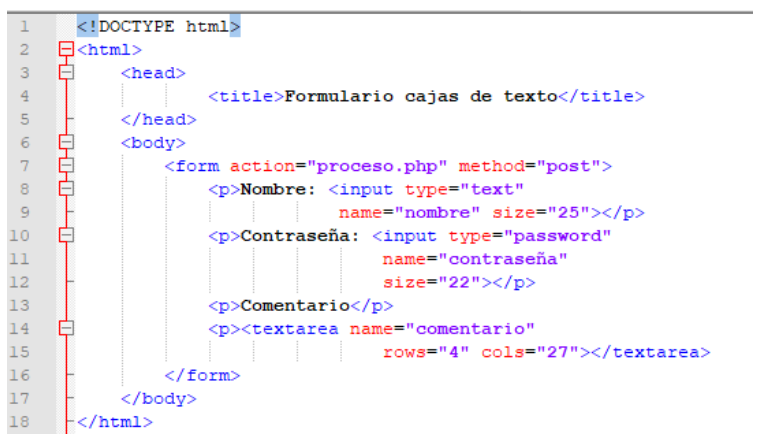
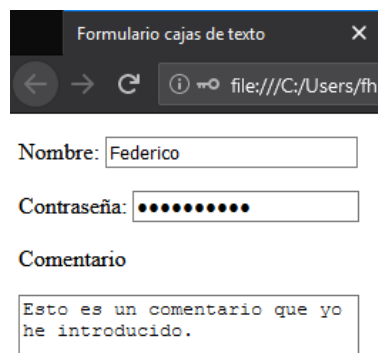
3.3.3. Casilla de verificación
Este control nos va a permitir elegir entre varias opciones y poder marcar una o varias.
- Etiqueta:
<input>. - Función: permite marcar o desmarcar casillas.
- Atributos:
type="checkbox";checkedindica si inicialmente se desea que el checkbox esté marcado. Para marcar la casilla, basta con escribirchecked. - Si no se indica un valor con el atributo
value, al marcarla se enviaría el valoron; en caso contrario, se enviaría el valor indicado. Si no se marca la casilla, no se enviaría nada.
En el siguiente ejemplo se usa el control checked para marcar dos opciones de tres posibles:
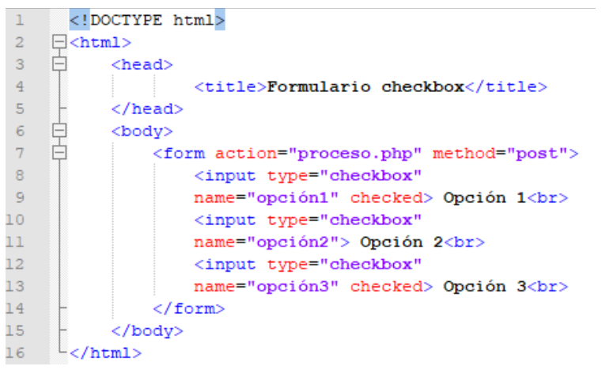
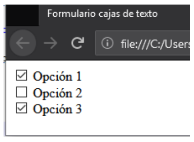
3.3.4. Botones radio
Este control nos permite elegir entre varias opciones, normalmente excluyentes.
- Etiqueta:
<input>. - Función: normalmente se usa en un grupo de opciones donde se elegirá solo una. Al elegir una opción, el resto se desmarca.
- Atributos:
type="radio". Para que los botones radio formen un grupo y las opciones sean excluyentes, el atributonamedebe ser el mismo para todos. valueindica el valor que se enviará si se marca la opción; si no se indica, se enviaríaon. Si no se marca una opción, no se envía nada.checkedse puede utilizar, al igual que con las casillas de verificación, para marcar una opción inicialmente.
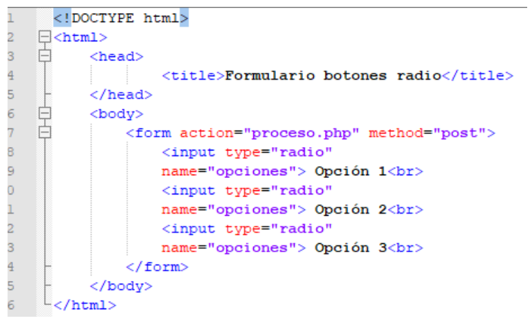
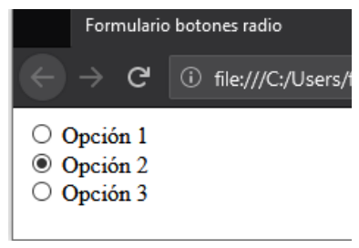
3.3.5. Listas desplegables
Nos permiten mostrar una lista de opciones cuando pulsamos en el control.
- Etiqueta:
<select>. - Función: muestra opciones en una lista. Las opciones se colocan dentro de
<select>y se indican con la etiqueta<option>. sizese asocia a<select>e indica la altura del control.valuese asocia a<option>e indica el valor de la opción seleccionada.selectedse asocia a<option>e indica la opción seleccionada por defecto.
Observa cómo se han utilizado las listas desplegables en el siguiente ejemplo:
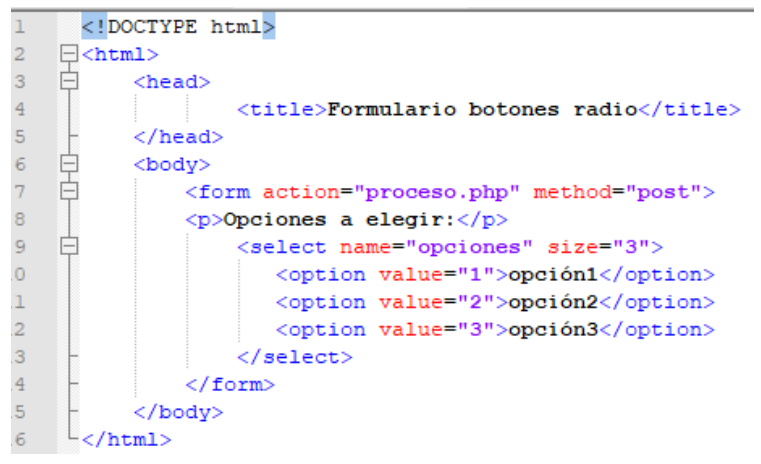
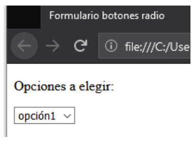
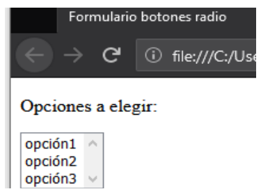
Caso práctico 1: «Actividades formativas»
Planteamiento: Alberto quiere incluir en la intranet de la empresa una tabla con los horarios de algunos cursos que se quieren impartir.
Nudo: se reúne con Gloria y le comenta lo que necesita. La tabla debe contener:
- El título de la tabla: «ACTIVIDADES FORMATIVAS».
- Una segunda fila que contenga la cabecera donde aparecerá el nombre del curso, el horario y las horas de duración.
- Los siguientes cursos en el cuerpo de la tabla:
- Curso de HTML, 20 horas, de 16:00 a 20:00.
- Curso de CSS, 15 horas, de 9:00 a 12:00.
- Curso de JavaScript, 20 horas, de 16:00 a 20:00.
- Curso de jQuery, 20 horas; comparte horario con el curso de JavaScript.
- En el pie de la tabla se debe mostrar el total de horas.
Desenlace: puedes observar una representación de la solución en la figura 24, tal y como se visualizaría en el navegador. El código correspondiente lo encontrarás en el anexo del tema.
Solución completa: «Lenguaje de marcas-tema5-Anexos».
| Curso | Horario | Aula | Horas |
|---|---|---|---|
| HTML | 16:00 a 20:00 | Aula 1 | 20 horas |
| CSS | 9:00 a 12:00 | Aula 3 | 15 horas |
| JavaScript | 16:00 a 20:00 | Aula 4 | 20 horas |
| jQuery | Aula 5 | 20 horas | |
| Total de horas | 55 horas | ||
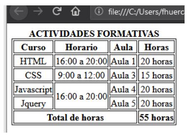
Caso práctico 2: «Grupo de controles»
Planteamiento: Gloria, mientras buscaba información en Internet, ha visto en algunas páginas que los controles de un formulario se pueden agrupar.
Nudo: se lo comenta a Alberto y este le dice que haga un pequeño manual de cómo se haría, incluyendo un ejemplo.
Desenlace: un grupo de controles permite agrupar los controles que podemos incluir en un formulario. La etiqueta <fieldset> los agrupa y <legend>, que debe incluirse al comienzo del grupo, proporciona el título que se mostrará.
| Control | Etiqueta | Función |
|---|---|---|
| Grupo de controles | <fieldset> | Permite agrupar controles. En el navegador se mostrarán rodeados de una línea. |
| Título del grupo | <legend> | Da el título al grupo de controles y se incluye dentro de <fieldset>. |
<form action="proceso.php" method="post">
<fieldset>
<legend>Datos personales</legend>
<label>Nombre: <input type="text" name="nombre"></label>
<label>Edad: <input type="number" name="edad"></label>
</fieldset>
<fieldset>
<legend>Datos de interés</legend>
<p>¿Estás casado?
<input type="radio" name="casado" value="si"> Sí
<input type="radio" name="casado" value="no"> No
</p>
<p>Deportes:
<input type="checkbox" name="deporte" value="baloncesto"> Baloncesto
<input type="checkbox" name="deporte" value="futbol"> Fútbol
<input type="checkbox" name="deporte" value="ciclismo"> Ciclismo
</p>
</fieldset>
<input type="submit" value="Enviar">
</form>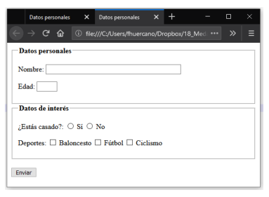
El código correspondiente lo encontrarás en el anexo del tema.
Solución completa: «Lenguaje de marcas-tema5-Anexos».
Resumen y resolución del caso práctico de la unidad
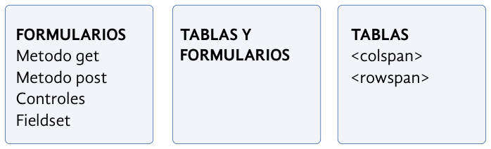
En este tema hemos trabajado con tablas y formularios. Las tablas nos permiten estructurar el contenido en filas y podemos destacar algunas celdas para que formen parte de la cabecera y del pie de la tabla.
Por otro lado, los formularios nos permiten recabar información del usuario y enviar esos datos al servidor para su procesamiento. Para ello, se utilizan lenguajes del lado del servidor como PHP.
Resolución del caso práctico de la unidad
Una de las visualizaciones que puede adoptar el formulario encargado por el cliente Sol y Mar es la que se muestra en la figura 27. El código correspondiente lo encontrarás en el anexo del tema.
Solución completa: «Lenguaje de marcas-tema5-Anexos».
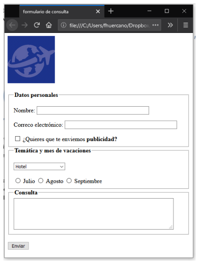